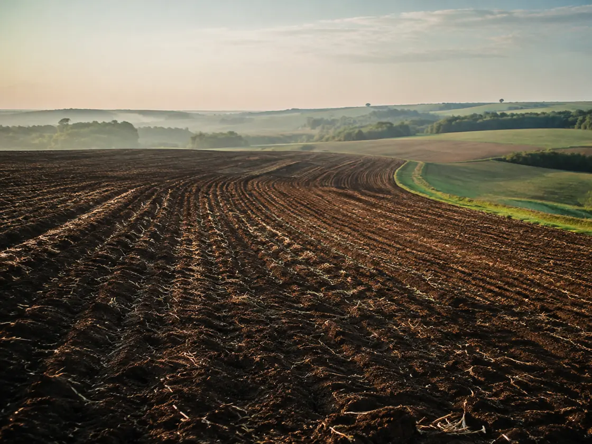
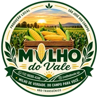
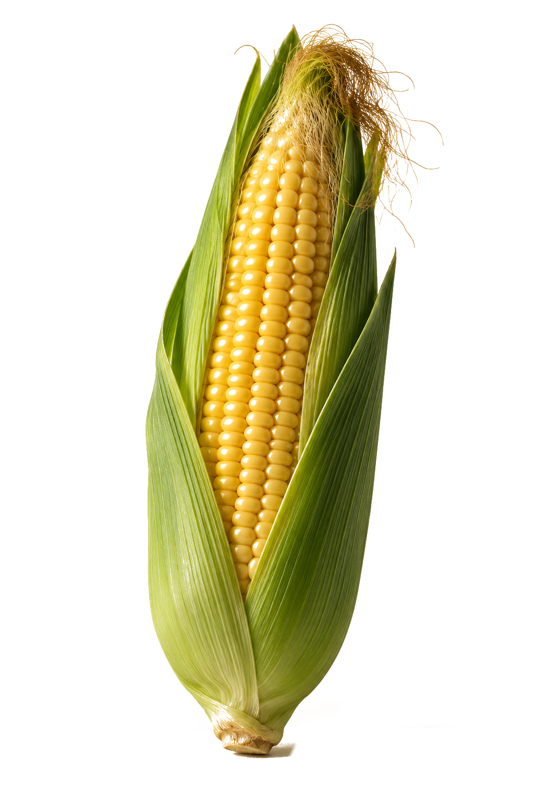
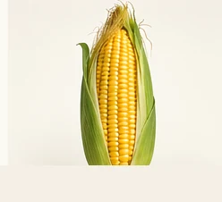
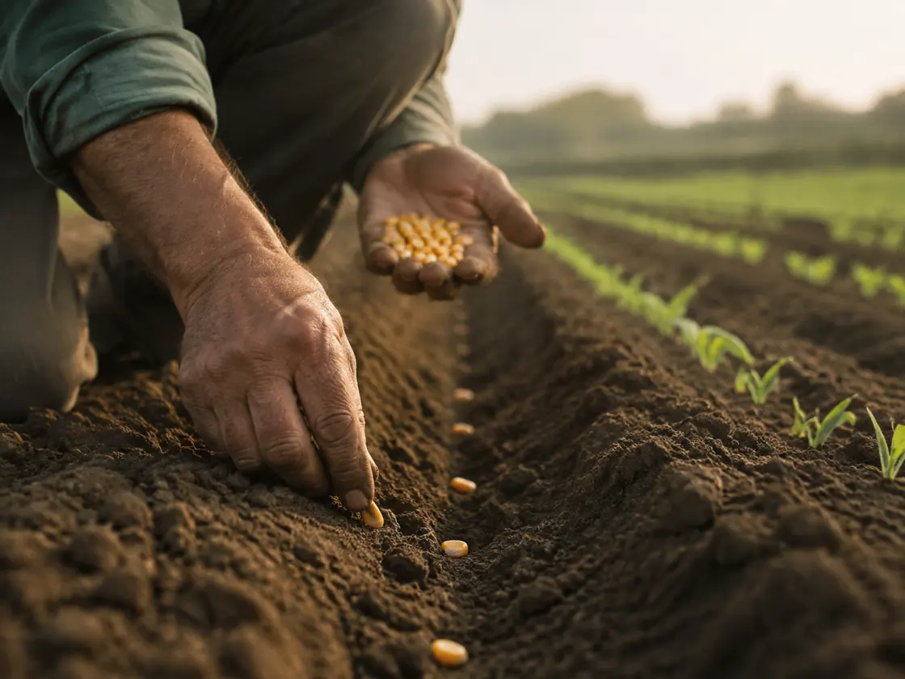
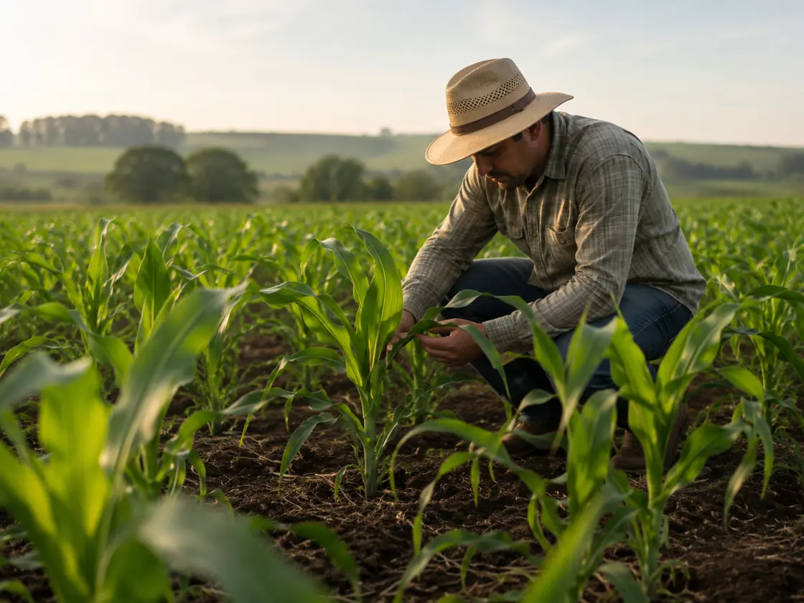
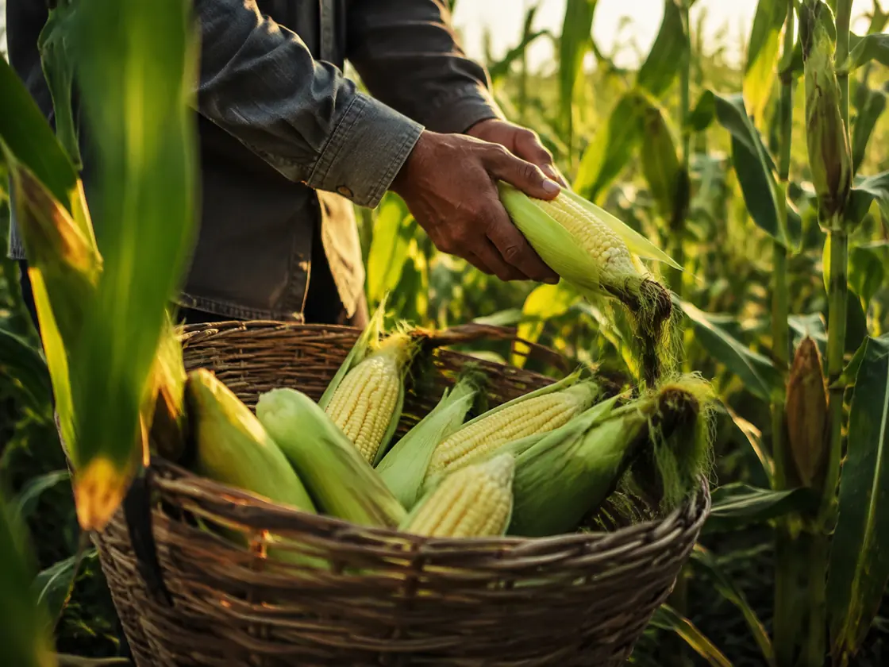
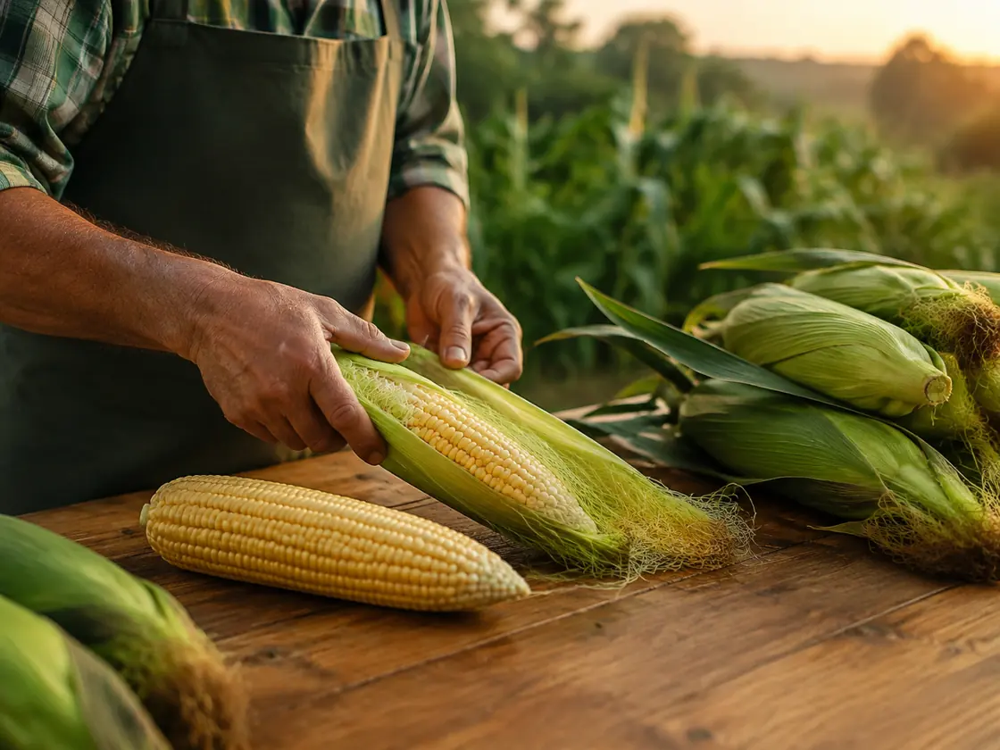
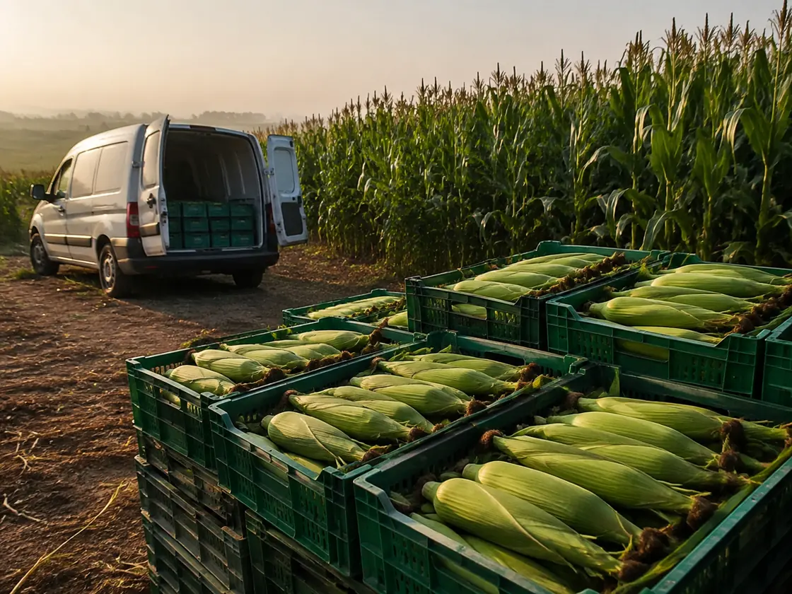

01
Preparo
O cuidado começa antes mesmo do plantio, com a preparação da área que receberá a nova produção.

milho do valeProduzido em São José dos Campos
Milho verde não transgênico, produzido localmente e comercializado no atacado e varejo.
Atacado e varejo · Entregas programadas

O milho

MAS O QUE FAZ ESSE MILHO DIFERENTE...
COMEÇA MUITO ANTES DA COLHEITA.
É AQUI QUE TUDO COMEÇA.
Nossa origem
Do campo para você. Conheça o caminho do nosso milho.
Da primeira semente à sua mesa

Preparo
O cuidado começa antes mesmo do plantio, com a preparação da área que receberá a nova produção.

Plantio
É aqui que uma nova safra começa.

Cultivo
Acompanhamos o desenvolvimento da lavoura até o milho atingir seu momento ideal.

Colheita
O milho é colhido no momento certo, preservando aquilo que mais importa: qualidade e frescor.

Seleção
Antes de chegar até você, o milho passa pela seleção do produto.

Entrega
Do nosso campo para sua casa ou seu negócio.
Atacado e varejo
Milho verde produzido em São José dos Campos, com entregas programadas.